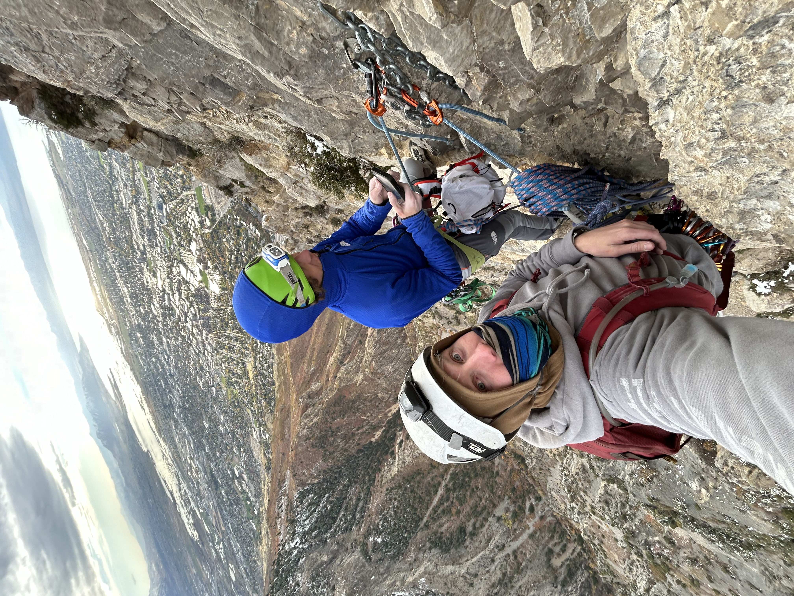

Luke Beebe
Wanna See My Resume? Click Here
Why I Love Rock Climbing
I started climbing when I was 16 and immediately fell in love with the sport. While serving my mission in Boise, Idaho, I climbed to connect with others and share the gospel. My favorite climb so far was climbing the tallest sport wall in the United States: SquawStruck, here in Provo! .
I’m especially drawn to big wall climbing, where I can test my endurance and focus over hours or even days on the rock. My favorite brand is Petzl—their gear is top-notch—and my climbing hero is tommy Caldwell.
Watch Tommy Caldwell Climb a Section of the Worlds Hardest Climb
Digging Deep: Why I Do It
- Mental Strength
- Staying calm and problem-solving on the wall
- Trusting my gear and my belayer
- Community
- Climbers are supportive and relaxed
- I’ve made lifelong friends from climbing
- Connection to Nature
- Being outdoors is good for the soul